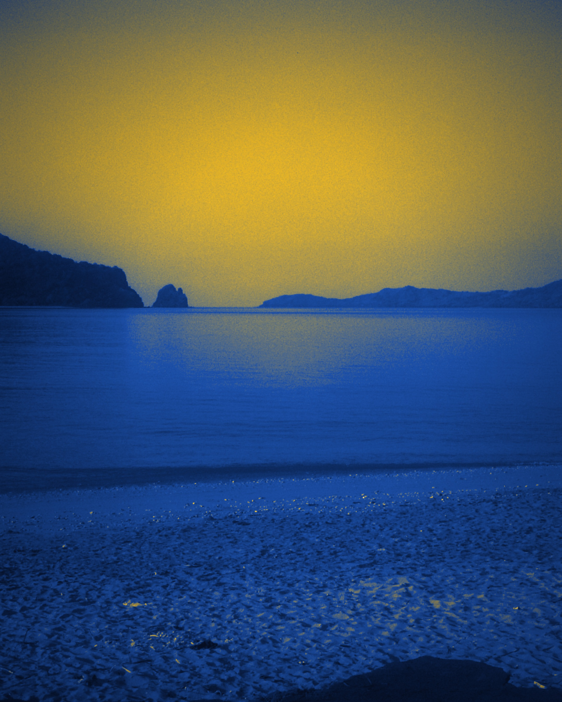

MoheliGoTRAVERSÉES MARITIMES DES COMORES
ÎLOTS DE NIOUMACHOUA
UNION DES COMORES
UNION DES COMORES
À UNE TRAVERSÉE DE LA GRANDE COMORE
MOHÉLI
Ouroveni ou Chindini le matin, Hoani ou Fomboni à l'arrivée. Votre place se réserve en deux minutes.
moheligo.com
BILLET QR · MVOLA · MÉTÉO MER 7 JOURS

Photo : Fatima771 (CC BY 3.0, Wikimedia Commons) — traitement MoheliGo